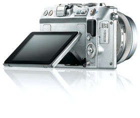
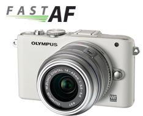
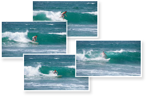
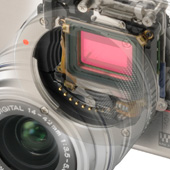
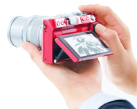
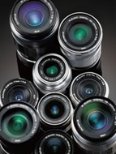
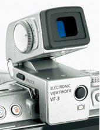

-
FLIP-OUT WIDE SCREEN 3.0-INCH LCD MONITOR
The E-PL3 is the first PEN model to incorporate a flip-out LCD monitor in a compact body
 -
ULTRAFAST AF BASED ON THE LATEST TECHNOLOGY
Focusing your shots with the Olympus PEN Lite is faster than with any other camera on the market. You’ll produce sharper than sharp photos in a split second.
 -
5.5 FPS HIGH-SPEED SEQUENTIAL SHOOTING
It incorporates a newly developed compact high-speed shutter mechanism*1 specially designed to deliver high performance in a compact body.
 -
NEW 12.3-MEGAPIXEL LIVE MOS SENSOR
The E-PL3 incorporates a new 12.3-megapixel High Speed Live MOS sensor that is a high-sensitivity, high-speed version of the traditional Live MOS sensor.
 -
FL-LM1 HIGH-CAPABILITY REMOVABLE FLASH
A removable flash (GN10 (ISO200)) that can be attached only when needed is provided in the product package.

-
ART FILTER
Designed for those who are not satisfied with simply capturing reality, but who also want to enjoy artistic expressions with their cameras, The Art Filters has made another progress.

-
FULL HD MOVIE
To make the most of its SLR image quality when recording movies, the E-P3 can record full HD movies in the super-high-quality AVCHD.
 -
BUILT-IN IMAGE STABILIZATION
Though small, the image stabilization mechanism built into the camera offers remarkably high performance.
 -
ACCESSORY PORT 2
An accessory port on the back of the camera lets you connect a variety of accessories.
 -
FACE AND EYE DETECTION AF/ TRACKING AF
An accessory port on the back of the camera lets you connect a variety of accessories.